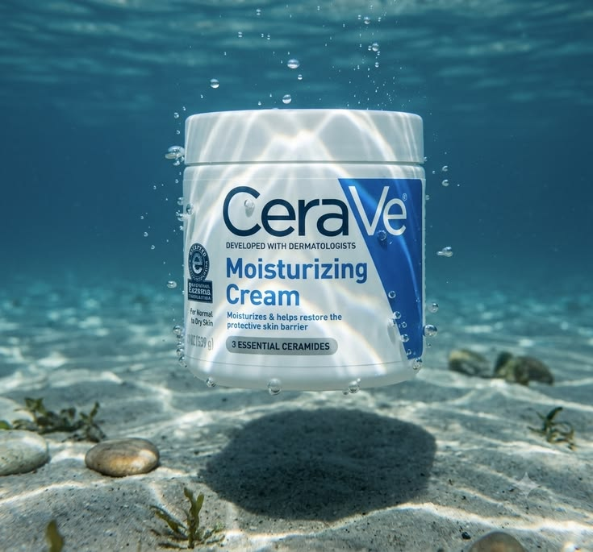

Personal skincare discovery
Skincare for Your Skin
The Perfect Skincare RoutineThoughtful skincare for a fresh, healthy-looking glow. Discover products selected around your skin’s needs and the ingredients that matter to you.

IntroductionA ritual made personal.
BenefitsSupport for the way your skin feels today.
IngredientsThoughtful choices, clearly considered.
Your matchSelected around what matters to you.
Your matches.
0 products
Prices verified against the retailer on 28 July 2026. Shops reprice often, so confirm on the product page before buying.
Finding products that match your preferences…
No products matched this combination. Try changing one of your filters.